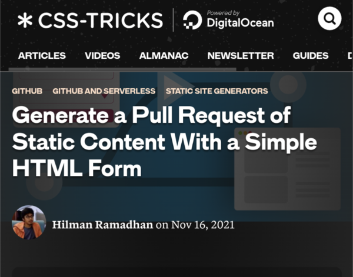
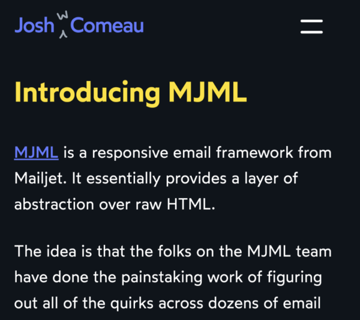
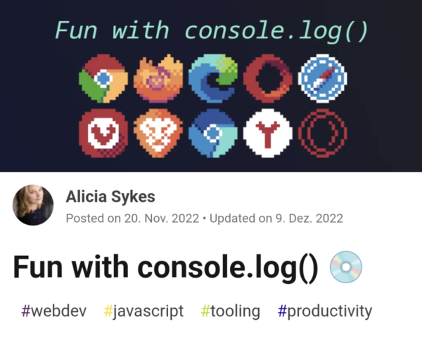
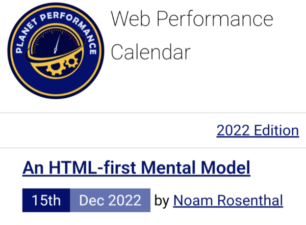

Discoveries #22 - Tips/Tricks
As someone said the other day? “January is the Monday of the year”. How true. After programming myself a new workflow for creating my discoveries (see Generate Content from Trello) at the end of last year, I wanted to try it out again right away and give you a list of tips and tricks for starting 2023.
- 6 steps to get verified on Mastodon with encrypted keys
- Generate a Pull Request of Static Content With a Simple HTML Form
- My Wonderful HTML Email Workflow, using MJML and MDX for responsive emails
- How to View Build Logs for GitHub Pages
- Enabling IntelliSense for GitHub Actions workflows in VS Code
- 9 JavaScript Console Tips That Will Improve Your Debugging Skills
- Fun with console.log()
- Load hierarchical data from MSSQL with recursive common table expressions
- An HTML-first Mental Model
- Project Documentation with Hexo Static Site Generator
6 steps to get verified on Mastodon with encrypted keys
by Seth Kenlonhttps://opensource.com/article/22/12/verified-mastodon-pgp-keyoxide
To verify that you control your Mastodon account, the easiest way is to add a verification link in your profile, which points to your blog/website and where Mastodon find a link attributed with 'rel=me'. For advanced verification you can use the power of shared encrypted keys, which Mastodon can link to thanks to the open source project Keyoxide … and Seth shows how to get it.
Generate a Pull Request of Static Content With a Simple HTML Form
by Hilman Ramadhanhttps://css-tricks.com/generate-a-pull-request-of-static-content-with-a-simple-html-form/
Hosting your static files blog/site/whatever on GitHub and wan't others to contribute? Hilman has an idea to achieve this via a standard form, that creates a Pull Request!
My Wonderful HTML Email Workflow, using MJML and MDX for responsive emails
by Josh Comeauhttps://www.joshwcomeau.com/react/wonderful-emails-with-mjml-and-mdx/
Writing HTML E-Mails can be challenging, because you can't use all the modern stuff. For a good reason the technique building mails has stuck in the 90s. Josh's tutorial is about using the framework MJML (Mailjet Markup Language), which offers an abstraction layer over raw HTML.
How to View Build Logs for GitHub Pages
by Rizèl Scarletthttps://dev.to/github/visualize-github-pages-build-logs-1mc1
GitHub Pages are build with Jekyll and as the deployments runs with GitHub Actions it's easy to view the build details. But more interesting in Rizèl's article is as he describes a fully custom deployment without Jekyll.
Enabling IntelliSense for GitHub Actions workflows in VS Code
by Gérald Barréhttps://www.meziantou.net/enabling-intellisense-for-github-actions-workflows-in-vs-code.htm
There are som VS Code Plugins out there, which supports Intellisense while writing workflow YAML files for configuring GitHub Actions. Gérald has a tip how to achieve that manually.
9 JavaScript Console Tips That Will Improve Your Debugging Skills
by Sunil Sandhuhttps://blog.bitsrc.io/9-javascript-console-tips-that-will-improve-your-debugging-skills-1899e37469d5
The console is more powerful than you might think. Sunil talks here about the possibilities to debug a bit better and more efficient. I have to use 'time' more often…
Fun with console.log()
by Alicia Sykeshttps://dev.to/lissy93/fun-with-consolelog-3i59
In addition to Sunils tips above, Alicia summarizes it here and has some more tips for efficient debugging in the browser.
Load hierarchical data from MSSQL with recursive common table expressions
by Robert Muehsighttps://blog.codeinside.eu/2019/03/31/load-hierarchical-data-from-mssql-with-recursive-common-table-expressions/
Designing a hierachie inside MS SQL can be painfull, but at least there is a way to load this data in a fast way, as Robert shows.
An HTML-first Mental Model
by Noam Rosenthalhttps://calendar.perfplanet.com/2022/an-html-first-mental-model/
Noam, from Google Chrome's speed metrics team, writes about his experiences on developing a showcase movies app using different frameworks regarding speed and performance in the browser and why we always keep good old HTML in mind.
Project Documentation with Hexo Static Site Generator
by Bruno Motahttps://www.sitepoint.com/project-documentation-hexo/
Bruno Mota looks at how you can create project documentation using Hexo, the static site generator built on Node.js, and deploy easily to GitHub Pages. Some stuff to learn there for me, who runs this blog nearly the same way…
You can interact with this article (applause, criticism, whatever) by mention it in one of your posts or by replying to its syndication on Mastodon, which will also be shown here as a Webmention ... or you leave a good old comment with your GitHub account.
Webmentions
No Webmentions yet...
In case your blog software can't send Webmentions, you can use this form to submit me a mention of this article...


Comments